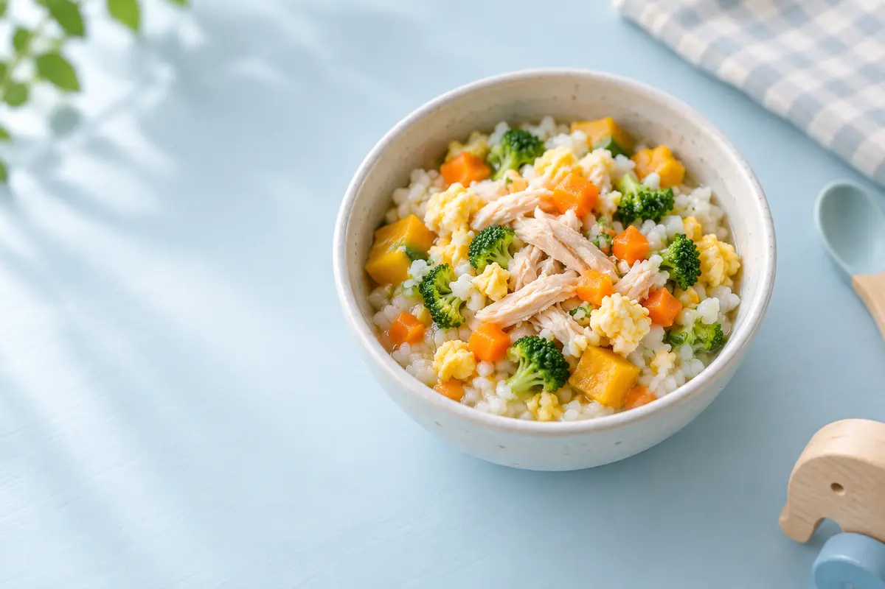

วัตถุดิบที่บ้าน → เมนูที่ทำได้
วันนี้ให้ปรายใสกินอะไรดี?
เลือกของที่มี ระบบจะเรียงเมนูที่ทำได้ก่อน พร้อมบอกของที่ขาด เวลา และวิธีเตรียมให้เหมาะกับวัย

ขั้นที่ 2
เมนูที่แนะนำ
เลือกวัตถุดิบเพื่อค้นหาเมนู
เมนูที่ดูล่าสุด
เก็บไว้เฉพาะในอุปกรณ์นี้
ข้อควรระวัง
ปรับขนาดและเนื้อสัมผัสตามทักษะการเคี้ยวและกลืน นำก้าง กระดูก และเมล็ดแข็งออก ปรุงเนื้อสัตว์และไข่ให้สุก และดูแลเด็กขณะรับประทานเสมอ
ข้อมูลนี้เป็นแนวทางจัดเตรียมอาหารทั่วไป ไม่ใช่คำแนะนำทางการแพทย์ เด็กแต่ละคนมีพัฒนาการและประวัติแพ้อาหารต่างกัน หากมีโรคประจำตัว น้ำหนักขึ้นไม่เหมาะสม กลืนลำบาก หรือสงสัยว่าแพ้อาหาร ควรปรึกษากุมารแพทย์หรือนักกำหนดอาหารเด็ก